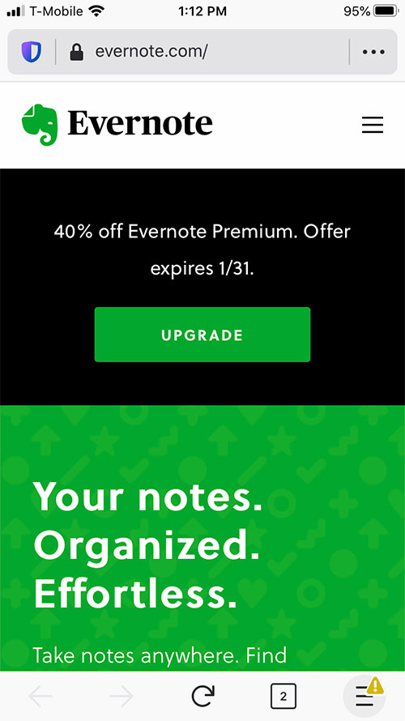
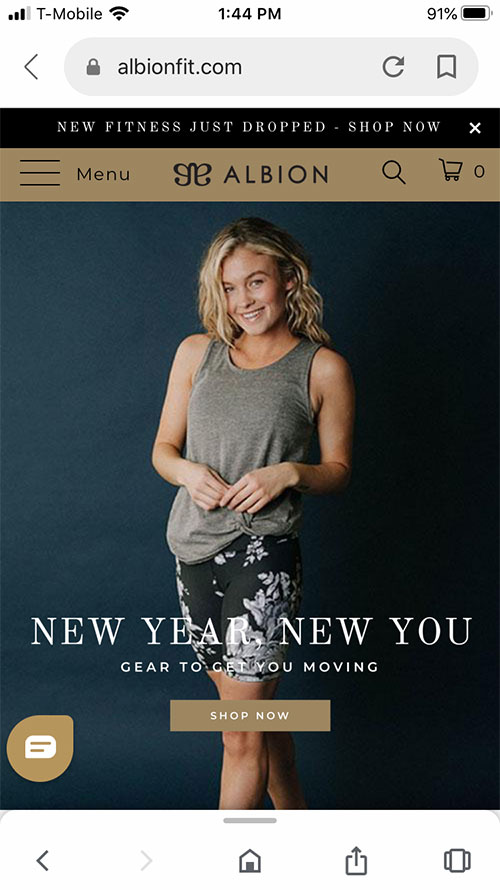

Repetition
Evernote
Evernote's site uses repetition through color. The green color is seen in the logo at the top of the page, the button on the banner, and the background of the landing section. This repetition makes the different sections of the page feel cohesive and it leads the eye throughout the page making it interesting.
Alignment
Pinterest's site uses alignment to organize the feed. The entire page has the same outer margins. Within the feed, the grid is aligned in two columns. The grid gap between each pin is the same and it leads to a very organized feel in what could have been an overwhelming amount of information.
Visual Hierarchy
Albion Fit
Albion Fit's landing page on their mobile site makes use of visual heirarchy. There is a large image that catches your attention right away. Then you look at the large tag line over the image that says "New Year, New You." Next you see a button which is a call to action-- "Shop Now". This visual heirarchy effectively draws the visitor into the website and makes them want to act.